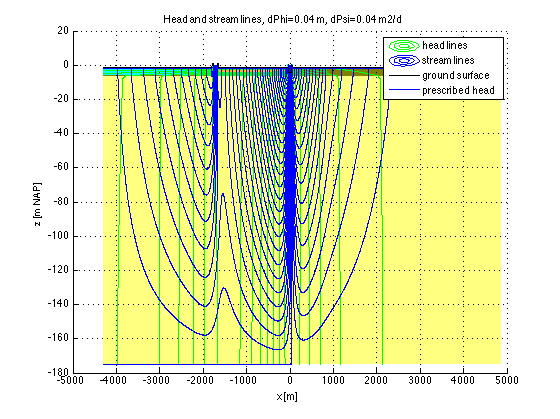

Dredging of the river Vecht (Netherlands, Prov. Utrecht) 2011
This example deals with soil mechanics, i.e. the risk of bursting of soil by over pressure from below (see introduction). The second objective is to demonstrate the use of the xsConfObj. This object facilitates working with cross sections by allowing to define one as a set of zone-layer combinations and specified properties. See the help of xsConfObj and the workbook of the current example. This workbook stores the information of the cross section in two worksheets, "config" and "materials". The first specifies the layout of the cross section, the second specifies the materials used together with their properties and dimensions.
Contents
- Introduction
- Request a xsConfObj
- Grid
- Get necessary model arrays using material list and config
- Find which cells are wet
- Boundary array, determining which cells are active and which are fixed
- Adapt hydraulic conductivities with degree of wetting
- Prescribed heads
- Compute heads and discharges using finite difference method
- Results
- plot values over the full width of the cross section
- Total cross section
- Detail: same for cross section of viewWidth/2 m beyond dikes along river
- Plot stream-line patterns with heads and flows
- Zoom in
- Compute and plot ground-bursting safety in all cells
- Total pressure at the bottom of all cells
- Water pressure relative to cell bottom or zero if head below cell bottom
- Safety factor equals p/sigmaw, total pressure over water pressure at cell bottoms
- Add safety status to plot, by plotting colored markers at all cell bottoms if any risk exists
- Compute and show minimum safety factor in verticals of cross section
- Water budget
- Overview of config and material properties
- Check safety computation (verification)
Introduction
To remove the pollution and the nutrients that had accumulated for over a century, the bottom of the river Vecht (province of Utrecht, the Netherlands) was dredged as from 2011. However,the water level in this river is higher than the land and its maintained ditch water level on either side. This is often the case in the Netherlands due to subsidence that occured over several last centuries as a consequence of drainage. Removal of the the hydraulic resistance of the river bottom by dredging causes a water-pressure rise under the adjacent land. This increased groundwater pressure could break the soil layers with unmanageable groundwater upwelling as a feared consequence. This being unacceptable and the standing standard safety rules not allowing the planned dredging because of this risk, forced to model the process to evaluate the actual safety and to follow the progress as dredging proceeds as a prerequisite for the dredging project to proceed.
The modeling was done with this model in mfLab.
The model is a vertical cross section perpendicular to the river. Different cross sections along the Vecht can readily be input using the convenient config and material worksheets in the workbook, while allowing a detailed finite differnce grid for accurate meter-scale results.
The modeling is done by finite elements using fdm2.m in the mfLab environment. MODFLOW was not used.
TO 001203 JB+TO 101123 TO 101201 101222 120804
clear variables; close all basename='VechtDredging';
Request a xsConfObj
Request a xsConfObj (cross section configuraton object) and by dowing this retrieve the configuration of the cross section from the Excel Workbook together with the material properties. Any properties can be specified and added in the Materials worksheet and any layout in the config worksheet of the accompanying workbook in the current directory.
Conf = xsConfObj(basename,'Config','Materials');
Grid
dxMin=2; % standard cell width xGr = Conf.xL(1):dxMin:Conf.xR(end); % uses left and right coords of zones Z = Conf.array2D('Z' ,xGr); % extracts Z of model (Nz+1,Nx) [xGr,Z,xm,ZM,Dx,DZ,Nx,Nz]= modelsize(xGr,Z); % cleans the grid
Get necessary model arrays using material list and config
HI = Conf.array2D('head' ,xGr); % initial heads no NaNs HK = Conf.array2D('kh' ,xGr); % initial horizontal conductivity VK = Conf.array2D('kv' ,xGr); % initial vertical conductivity topHd = Conf.array2D('tophead',xGr); % initial includes NaNs
Find which cells are wet
WET = min(max( (HI-Z(2:end,:))./DZ,0),1); % wet is when saturation > 0
Boundary array, determining which cells are active and which are fixed
IBOUND = Conf.array2D('IBOUND',xGr); % initial IBOUND all ones (active) IBOUND( ~WET) = 0; % dry cells inactive IBOUND( mf_find(WET>0,'first',1) & ~isnan(ones(Nz,1)*topHd) )= -1; %fix top wet cells unless isnan(topHd)
Adapt hydraulic conductivities with degree of wetting
HK = HK.*WET; VK = VK.*WET;
Prescribed heads
FQ=zeros(size(IBOUND)); % absent, all zeros
Compute heads and discharges using finite difference method
[Phi,Q,Psi,Qx,Qy]=fdm2(xGr,Z,HK,VK,IBOUND,HI,FQ); % Compute heads
fdm2c in flat mode.
Results
plot values over the full width of the cross section
ttl = {'Prescribed head and head at NAP = -10 m'; ...
'Total horizontal discharge in aquifer, eastward positive'; ...
'Seepage through cover layer (upward positive)'};
leg = {'Ground surface','Prescribed head','h2','h3','etc'};
Total cross section
ax1 = Conf.plotOverview(xGr,Phi,Q,Qx,ttl,leg);
Detail: same for cross section of viewWidth/2 m beyond dikes along river
viewWidth = 100; X1=Conf.xL(strmatchi('VechtW',Conf.zoneNames))-viewWidth; X2=Conf.xR(strmatchi('VechtE',Conf.zoneNames))+viewWidth; args = {'xlim',[X1 X2]}; ax2 = Conf.plotOverview(xGr,Phi,Q,Qx,ttl,leg,args{:});
Plot stream-line patterns with heads and flows
ax3 = Conf.plotContours(xGr,Z,Phi,Psi);
Zoom in
set(ax3,'xlim',[X1 X2],'ylim',[-10 2]);
Compute and plot ground-bursting safety in all cells
- total pressure (grains + water)
- water pressure
Total pressure at the bottom of all cells

g =9.81; % gravity [N/kg] rhow =1000; % density [kg/m3] p = cumsum (g * DZ.* (Conf.array2D('rhodry',xGr) .*(1-WET) + Conf.array2D('rhowet',xGr) .* WET) , 1); % Water pressure on ground surface (model top). % This is relevant in river where bottom is ground surface. p0 = g * rhow * ones(Nz,1)*(Phi(1,:)-Z(1,:)); p0(p0<0)=0; % Total pressure including effect of water above ground surface p=p+p0; % Vertical specific discharge at bottom of each cell is taken for the % specfic vertical discharge inside the bottom half of each cell. We need % this because this changes the total pressure at the cell bottem relative % to that in the cell center. Remember we compute the safety at cell % bottoms, because its at cell bottoms where material properties suddenly % change and bursting of soil may occur in case of upwelling with sand % under clay. qy = [Qy./(ones(Nz-1,1)*Dx);zeros(size(xm))]; % qy at bottom of cells
Water pressure relative to cell bottom or zero if head below cell bottom
sigmaW = rhow * g .* ( (Phi-Z(2:end,:)) - qy.*(DZ/2)./VK); sigmaW(sigmaW<0)=0;
Safety factor equals p/sigmaw, total pressure over water pressure at cell bottoms
% Safety factor = total pressure/water pressure safety=p./sigmaW; % Handle exeptions: % 1) Water is always safe safety(Conf.array2D('matindex',xGr)==strmatchi('Water',Conf.matNames,'exact'))=Inf; % 2) Dry cells are always safe safety(~WET) = Inf; % head below cell bottom % 3) Downward flow always safe safety(qy<0) = Inf; % Cell bottom center coordinates, which is where the safety was computed XM = ones(Nz,1)*xm; BOT = Z(2:end,:);
Add safety status to plot, by plotting colored markers at all cell bottoms if any risk exists
ls=safety>=1.1 & safety<1.2; plot(ax3(2),XM(ls),BOT(ls),'b.','markersize',7); % small risk ls=safety>=1.0 & safety<1.1; plot(ax3(2),XM(ls),BOT(ls),'m.','markersize',7); % medium risk ls=safety< 1.0; plot(ax3(2),XM(ls),BOT(ls),'r.','markersize',7); % large risk legend('head','stream lines','ground surface','prescribed head','small risk','medium risk','large risk');
Warning: Ignoring extra legend entries.
Compute and show minimum safety factor in verticals of cross section
Draw an extra plot showing the lowest safety in any vertical column. This is a graph of the computed safetyfactor versus x. This graph will be colored to indicate safe or risk at any x of the cross section.
% minimum safety along vertical lines safetymin=min(safety,[],1); % plot each range of safety in its own color figure; args = {'nextplot','add','xgrid','on','ygrid','on'}; ax4(2)=subplot(2,1,2,args{:}); xlabel(ax4(2),'x [m]'); ylabel(ax4(2),'safety factor [-]'); title(ax4(2),'Minimum safety factor against vertical soil breakup'); s=safetymin; ls=s < 1.0; s(~ls)=NaN; plot(ax4(2),xm,s,'r','linewidth',2.0); s=safetymin; ls=s >=1.0 & s<1.1; s(~ls)=NaN; plot(ax4(2),xm,s,'m','linewidth',1.5); s=safetymin; ls=s >=1.1 & s<1.2; s(~ls)=NaN; plot(ax4(2),xm,s,'b','linewidth',1.0); s=safetymin; ls=s >=1.2; s(~ls)=NaN; plot(ax4(2),xm,s,'g','linewidth',0.7); set(ax4(2),'xlim',xlim); legend(ax4(2),'unsave (<1.0)','large risc (1.0-1.1)','risc (1.1-1.2)','safe (>1.2)'); % Couple the x-axis with those of the previous figure (which has to axes % ax7a (material color patches) and ax7 the contours and lines. hlink1 = linkprop([ax3,ax4(2)],'xlim'); % To show Detail of dredging set detail=1 else set detail=0. % Overrule existing xlim (and ylim) to show more detail detail = 1; if detail set(ax4(2),'xlim',0.5*viewWidth*[-1 1]); else set(ax4(2),'xlim',xGr([1 end]),'ylim',5*[floor(min(Z(:)/5)) ceil(max(Z(:)/5))]); %#ok<*UNRCH> end ax4(1) = subplot(2,1,1,args{:}); xlabel('x [m]'); ylabel('elevation [m]'); title('Cross section ground surface and heads'); plot(ax4(1),xm,Conf.array2D('top' ,xGr),'g','linewidth',2); plot(ax4(1),xm,Phi(1:4,:)); legend('Ground Surface','prescribed head','head(2)','head(3)','head(4)'); hlink2 = linkprop(ax4,'xlim');


Water budget
fprintf('Total infiltration through river bottom is %.2f m2/d\n',sum(Q(1,xm>=X1 & xm<=X2)));
Total infiltration through river bottom is 3.57 m2/d
Overview of config and material properties
Conf.show('config'); Conf.show('materials');
Configuration:
zone xL [m]: -4297.0 -1797.0 -1773.0 -1673.0 -1649.0 -149.0 -49.0 -47.0 -35.0 -15.0 15.0 35.0 47.0 49.0 849.0 2349.0
zone xR [m]: -1797.0 -1773.0 -1673.0 -1649.0 -149.0 -49.0 -47.0 -35.0 -15.0 15.0 35.0 47.0 49.0 849.0 2349.0 4849.0
zone width [m]: 2500.0 24.0 100.0 24.0 1500.0 100.0 2.0 12.0 20.0 30.0 20.0 12.0 2.0 800.0 1500.0 2500.0
top (ground surface [m NAP]) -1.40 1.20 -0.40 1.20 -1.20 -1.20 -2.02 0.60 -4.25 -4.25 -4.25 0.50 -1.86 -1.30 -1.30 -1.70
prescribed head peil: [m NAP]: -2.10 NaN -0.40 NaN -2.02 -2.02 -2.02 NaN -0.40 -0.40 -0.40 NaN -1.86 -1.86 -1.71 -1.71
Totaal transmissivity: [m2/d]: 5055 5055 4.105e+06 5055 5057 5057 1.051e+05 5056 6.051e+05 7.051e+05 6.051e+05 5057 1.451e+05 5055 5055 4.805e+06
Totale vert. hydraul. resistance [d]: 489.4 749.4 179.4 749.4 360.9 360.9 169.9 615.1 23.4 23.3 23.4 568.4 268.9 199.3 199.3 366.5
Ground layer 1 [m NAP]: -2: K K W K K K W K W W W K W K K W
Ground layer 2 [m NAP]: -2: K K W K K K K K W W W K K V V W
Ground layer 3 [m NAP]: -3: K K W K Z Z Z K W W W K K V V W
Ground layer 4 [m NAP]: -4: K K W K Z Z Z K W W W K K V V W
Ground layer 5 [m NAP]: -4: K K W K Z Z Z K W W W K K V V W
Ground layer 6 [m NAP]: -4: K K W K K K Z K W W W K K V V W
Ground layer 7 [m NAP]: -4: K K W K K K Z Z S W S K K V V W
Ground layer 8 [m NAP]: -5: K K K K K K Z Z Z S Z K Z V V W
Ground layer 9 [m NAP]: -6: K K K K K K K K Z Z Z Z Z V V W
Ground layer 10 [m NAP]: -6: V V V V V V V V Z Z Z Z Z V V W
Ground layer 11 [m NAP]: -10: P P P P P P P P P P P P P P P B
Ground layer 12 [m NAP]: -15: P P P P P P P P P P P P P P P P
Ground layer 13 [m NAP]: -20: P P P P P P P P P P P P P P P P
Ground layer 14 [m NAP]: -50: P P P P P P P P P P P P P P P P
Ground layer 15 [m NAP]: -64: P P P P P P P P P P P P P P P P
Ground layer 16 [m NAP]: -65: P P P P P P P P P P P P P P P P
Ground layer 17 [m NAP]: -100: P P P P P P P P P P P P P P P P
Ground layer 18 [m NAP]: -150: P P P P P P P P P P P P P P P P
Ground layer 19 [m NAP]: -175: P P P P P P P P P P P P P P P P
Overview materials in this model:
Material properties: kh kv Red Green Blue Porosity rhoSolid rhoDry rhoWet
Property dimensions: [m/d] [m/d] [-] [-] [-] [-] [kg/m3] [kg/m3] [kg/m3]
Pleistocene_sand P 30 10 1 1 0.5 0.35 2640 1716 2066
Holocene_sand Z 1 1 1 0.75 0 0.35 2640 1716 2066
Sludge S 0.02 0.02 0.2 0.8 0 0.5 1400 700 1200
Clay K 0.01 0.01 0 1 1 0.6 2100 840 1440
Holland_peat V 0.04 0.04 0.5 0.5 0 0.6 1400 560 1160
Water W 1e+06 1e+06 0 0 0.8 1 1000 0 1000
Water_bottom B 0.01 0.01 0.75 0.5 0 0.6 2100 840 1440
Clay_cut_by_ditches D 0.1 0.1 0 1 1 0.6 2000 800 1400
Check safety computation (verification)
This code prints a table for the center of one of the zones depending on iCase and cases below. This table can be used to verify the model by doing hand calculations easily.
cases = {'VechtW','VechtE','Polder1W','PolderW'};
%
iCase =0;
if iCase
i = round(median(find(xm>Conf.xL(strmatchi(cases{iCase},Conf.zoneNames)) &...
xm<Conf.xR(strmatchi(cases{iCase},Conf.zoneNames)))));
% print header of table
fprintf(' j');
fprintf('%13s','Z','DZ','WET','Phi','Qy','dPhiQ','HK','VK','p','sigmaW','safety');
fprintf('\n');
% specific vertical discharge at selected column for all cell bottoms
qv = [Qy(:,i);0]/Dx(i);
% print table
for j=1:Nz
fprintf(['%2d ' repmat(' %12g',[1,11]) '\n'],...
j,Z(j+1,i),DZ(j,i),WET(j,i),Phi(j,i),qv(j),qv(j)*DZ(j,i)/2/VK(j,i),HK(j,i),VK(j,i),p(j,i),sigmaW(j,i),safety(j,i));
end
end